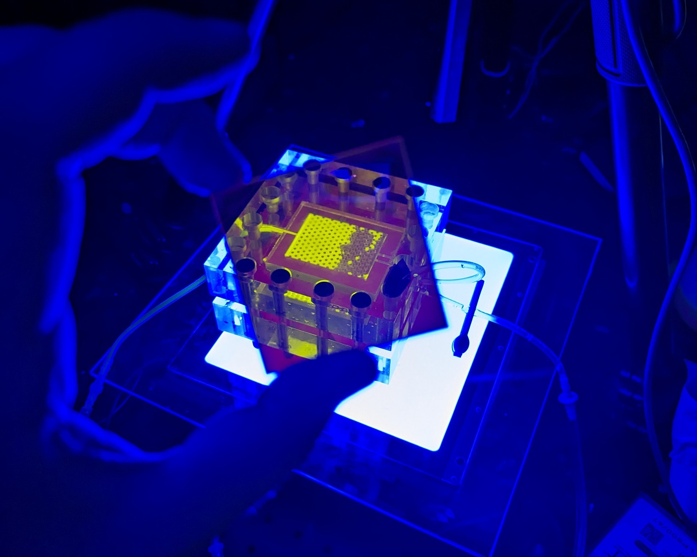
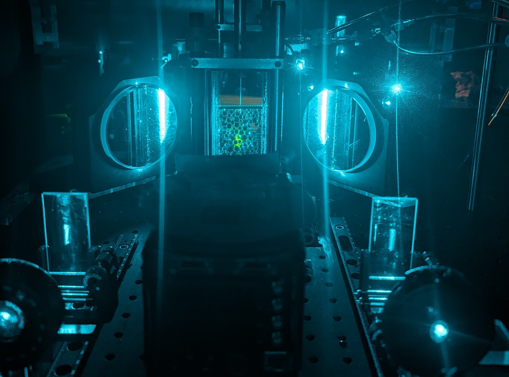
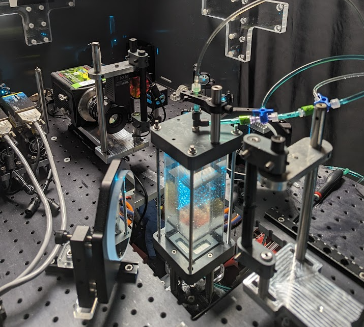
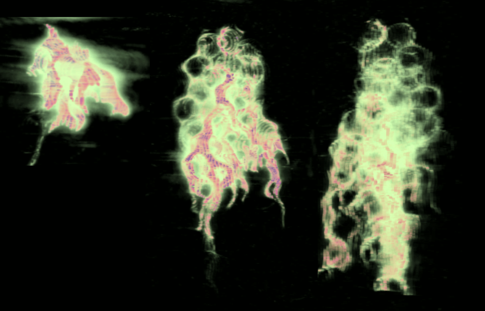
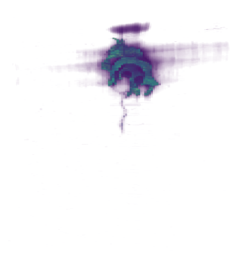
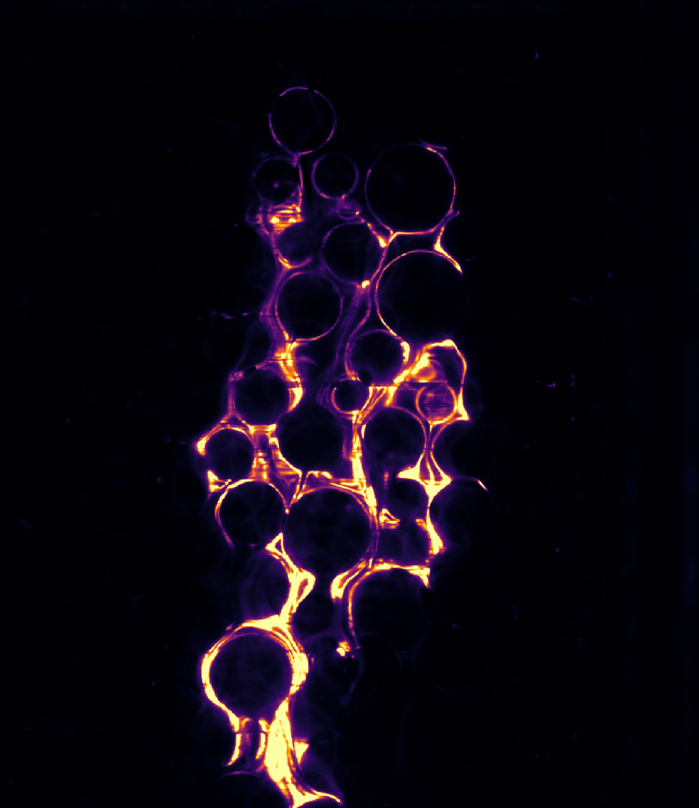
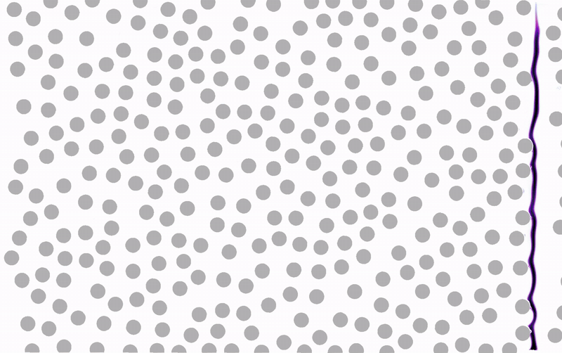
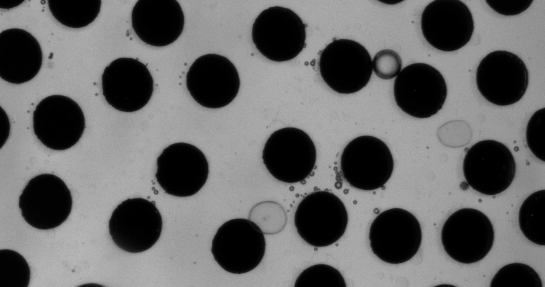
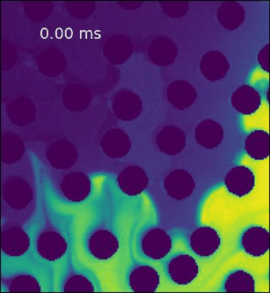
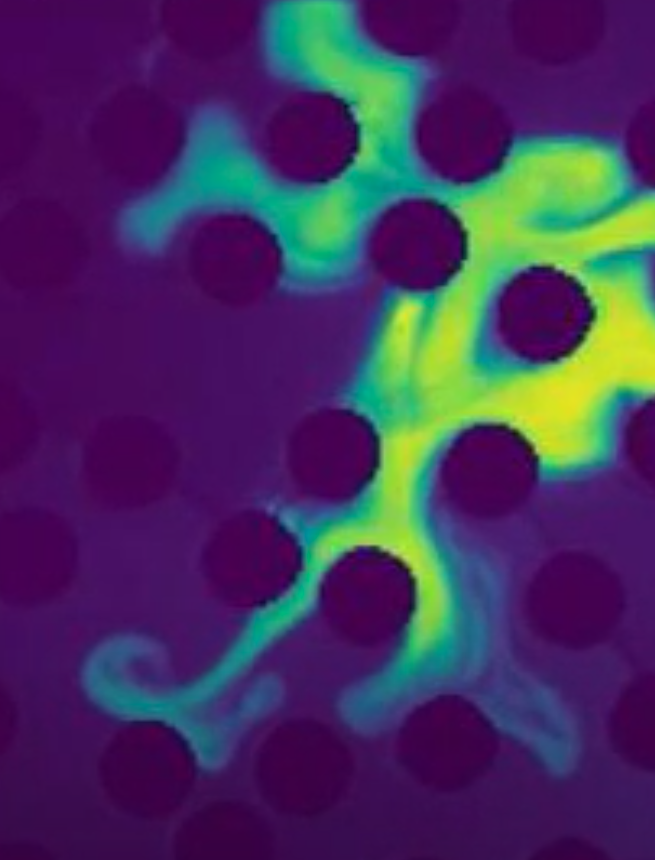

Mixing in multiphase flows
Mapping the effect of multiphase flow intermittency on fluid mixing rates in porous media.


3D imaging of mixing in multiphase flows
Haines jumps during drainage of a porous medium accelerate fluid mixing rates. Tomographic imaging experiments based on laser-induced fluorescence and refractive index matching resolve solute concentration fields at pore scale.










2D studies of mixing in drainage flows
Fluorescence imaging of solute transport in drainage flows, where air replaces water containing a chemical substance. Unsteady motion of fluid interfaces drives alternate stretching and folding of the solute distribution, leading to chaotic mixing.





Mixing by imbibition
Chemical laden water wicks into a porous medium with trapped clusters of water (secondary imbibition). Contact of invading and resident fluid bodies produces dramatic mixing jets.



